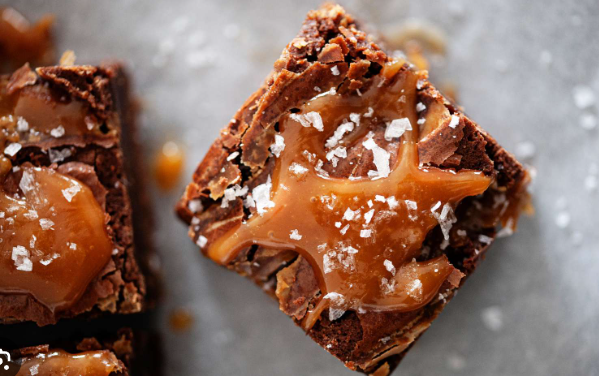

Caramel Brownies

Description
This is an easy recipe for caramel brownies made with chocolate cake mix. A combination of caramels and evaporated
milk make the chewy caramel layer in the middle.
Ingredients
- 1 (14 ounce) package individually wrapped caramels, unwrapped
- 2/3 cups evaporated milk, divided
- 1 (15.25 ounce) package chocolate cake mix
- 3/4 cup butter, melted
- 1 cup semisweet chocolate chips
Steps
- Preheat the oven to 350 degrees F (175 degrees C). Grease a 9x13-inch dish.
- Combine caramels and 1/3 cup evaporated milk in a heavy saucepan, Cook over
low heat, stirring constantly until smooth; set aside.
- Stir together cake mix, melted butter, and remaining 1/3 cup evaporated milk
in a large bowl by hand until dough comes together. Press 1/2 of the dough into the prepared dish.
- Bake in the preheated oven for 10 minutes. Sprinkle chocolate chips over crust
and pour caramel mixture evenly over chips. Crumble remaining dough over caramel layer and return to the oven.
- Continue baking for 15 to 18 minutes more. Cool in the refrigerator to set caramel before cutting into bars.